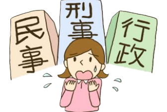

操縦者としての自覚
- 無人航空機の運航や安全管理等に対して責任を負う事。
- 知識と能力に裏付けられた的確な判断を行う事。
- 操縦者としての自覚を持ち、あらゆる状況下で、常に人の安全を守る事を第一に考える事。
心得とは
理解している事。又、理解してとりはからう事。
常に心掛けていなければならない事、心構え。
技芸を身につけている事、たしなみ。
ある事をするにあたって注意し、守るべき事柄。
無人航空機の事故は、飛行前の様々な準備不足が直接的又は間接的な原因となっている事が多い 事から、事前の準備を怠らない事。レクリエーション目的で飛行する場合でも、業務の為に飛行する 場合でも、安全に飛行する為のルールに関する情報、リソース、ツールを入手する事。
操縦者は、飛行を開始してから終了する迄、全てに責任を問われる。操縦者の最も基本的な責任は、 飛行を安全に成し遂げる事にある。従って、飛行の全体にわたって安全を確保する為の対策を実 施する必要があり、その責任は操縦者が負っている事を自覚する事。
第三者や関係者が危険を感じる様な操縦をしない、第三者が容易に近付く事のない様な飛行経 路を選択する等、常に第三者及び関係者の安全を意識する事。
衝突や墜落等の事故を起こした場合に、操縦者は、「刑事責任」「民事責任」を負う事があり、又「行 政処分」を受ける事がある。
衝突や墜落により死傷者が発生した場合、事故の内容により「業務上過失致死傷」等の刑事責任 （懲役、罰金等）を負う場合がある。

操縦者は、被害者に対して民法に基づく「損害賠償責任」を負う場合がある。
航空法（昭和 27 年法律第 231 号）への違反や無人航空機を飛行させるに当たり非行又は重大な 過失があった場合には、次の様な行政処分等の対象となる。
飛行前には必ず機体の点検を行い、気になる所があれば必ず整備をしてから飛行を開始する。
飛行前に、最新の気象情報（天気、風向、警報、注意報等）を収集する。
地域によっては、地方公共団体により無人航空機の飛行を制限する条例や規則が設けられていたり、 立入禁止区域が設定されていたりする場合がある事から、緊急用務空域や飛行自粛要請空域の情報も 含め飛行予定地域の情報を収集する。
緊急用務空域 国土交通省、防衛省、警察庁、都道府県警察又は地方公共団体の消防機関その他の関係機関の使 用する航空機のうち捜索、救助その他の緊急用務を行う航空機の飛行の安全を確保するため、国土交 通省が緊急用務を行う航空機が飛行する空域（緊急用務空域）を指定し、この空域では、原則、無人航 空機の飛行が禁止される（重量１００グラム未満の模型航空機も飛行禁止の対象となる）。 災害等の規模に応じ、緊急用務を行う航空機の飛行が想定される場合には、国土交通省がその都 度「緊急用務空域」を指定し、国土交通省のホームページ・X(旧Twitter）にて公示する。 無人航空機の操縦者は、飛行を開始する前に、当該空域が緊急用務空域に該当するか否かの別を 確認することが義務付けられている。空港等の周辺の空域、地表若しくは水面から１５０ｍ以上の高さ の空域又は人口集中地区の上空の飛行許可があっても、緊急用務空域を飛行させることはできない。
飛行の際には、携帯電話（通話可能範囲を確認しておく）等により関係機関（空港事務所等）と常に連 絡がとれる体制を確保する。
特定飛行（航空法において規制の対象となる空域における飛行又は規制の対象となる方法による飛行） を行う際には、許可書又は承認書の原本又は写し（口頭により許可等を受け、まだ許可書又は承認書の 交付を受けていない場合は許可等の年月及び番号を回答できる様にしておく。）、技能証明書（技能証 明を受けている場合に限る。）、飛行日誌を携行（携帯）する。
無人航空機の飛行による人の死傷、第三者の物件の損傷、飛行時における機体の紛失又は航空機と の衝突若しくは接近事案が発生した場合には、事故の内容に応じ、直ちに警察署、消防署、その他必要な 機関等へ連絡するとともに、国土交通大臣に報告する。
無人航空機の保険は、車の自動車損害賠償責任保険（自賠責）の様な強制保険はなく、すべて任意 保険であるが、万一の場合の金銭的負担が大きいので、保険に加入しておくと良い。無人航空機の保険 には、機体に対する保険、賠償責任保険など色いろな種類や組合せがあるので自機の使用実態に即し た保険に加入する事が推奨される。尚、カテゴリーⅡ飛行のうち一部の飛行（3.1.2(2)4）c.レベル 3.5 飛行を参照）にあたっては、不測の事態が発生した場合に十分な補償が可能な第三者賠償責任保険 に加入している事が求められる。